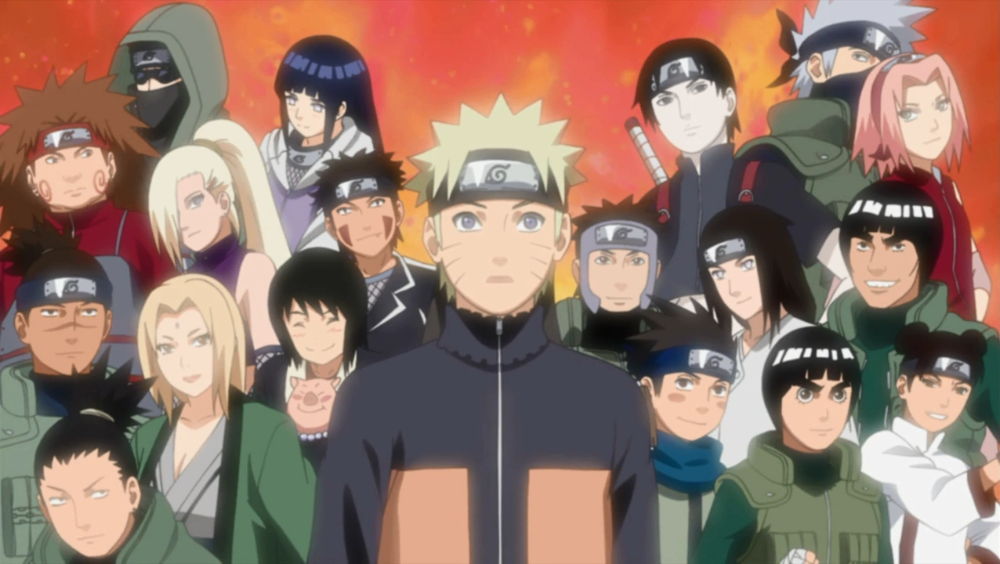

About Naruto
Naruto is awesome! He grows up being bullied as an unskilled ninja, but uses the bullying and negativity to prove others wrong about his potential to become the best ninja.
Naruto and his friends!
Naruto's Characteristics
- He has powerful movesets
- He has great communication skills in terms of justice
- He wants to be the leader of his village one day, a hokage
Naruto's Friends
Naruto has some amazing friends, I think his best friend is Sasuke because of how long he spent trying to help him. Click on the links below to read more about them: